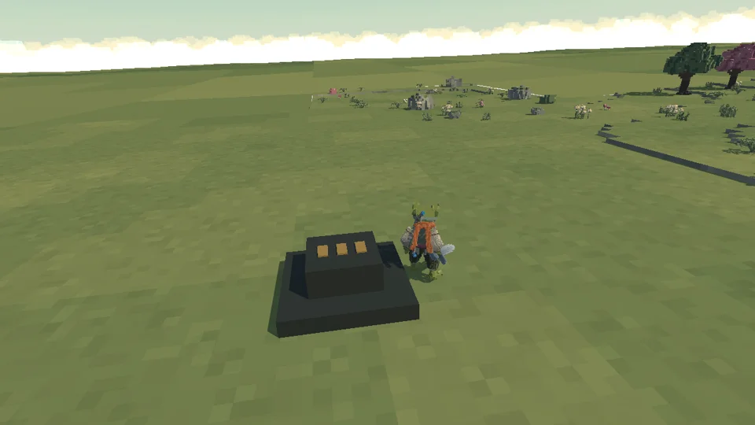
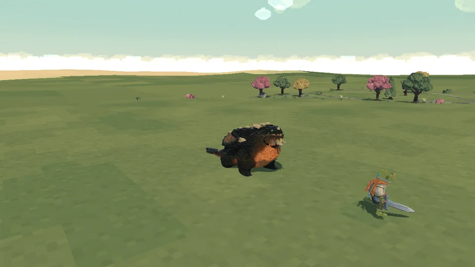
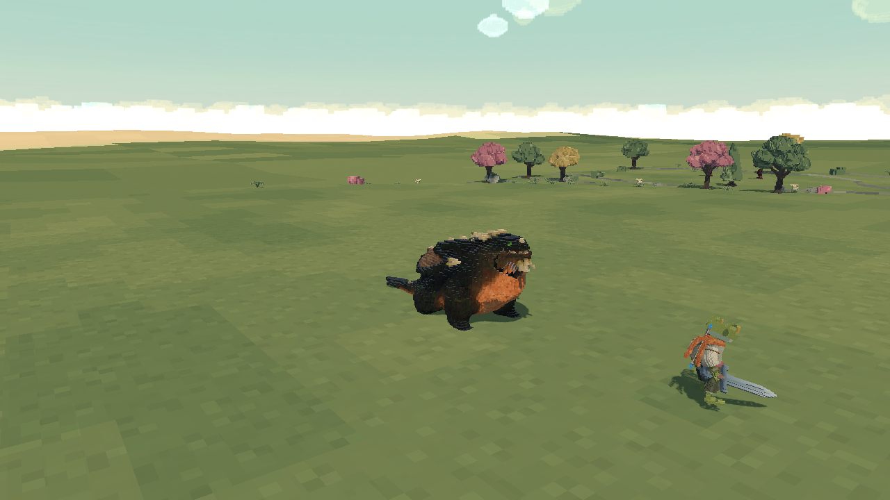

El dragón conserva el pecho completo y reproduce sus animaciones durante el encuentro. La llamarada verde se mantiene.

Descenso con aleteo
Vuelo, aterrizaje y rugido en la invocación.

Aliento en combate
Preparación, exhalación y recuperación con la malla corregida.

Pecho completo
Torso original conservado y boca articulada.